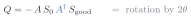

<!-- Slide 8: two reflections make a rotation, with the Grover iterate as gates.  One shared coordinate system across slides 7, 8, 9 and 11; see assets/ae-circle.js. -->
<div class="l2-fig">
<svg class="ae-fig" data-stage="2" viewBox="0 0 760 300" width="980"></svg>
</div>
<div class="slide-equation compact"></div>
<script src="../assets/ae-circle.js" defer></script>
